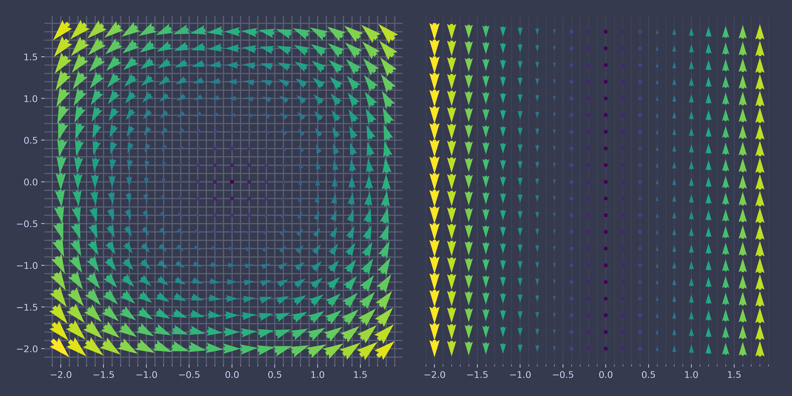
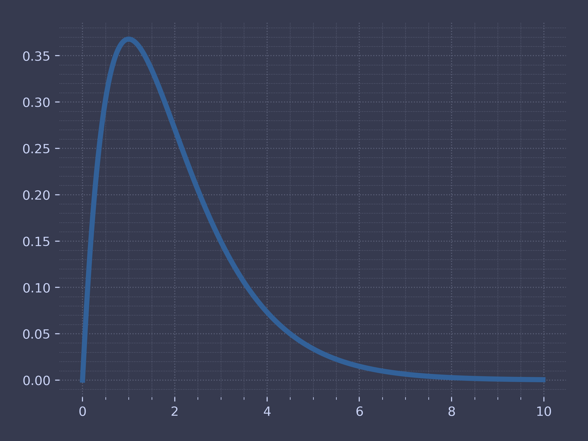
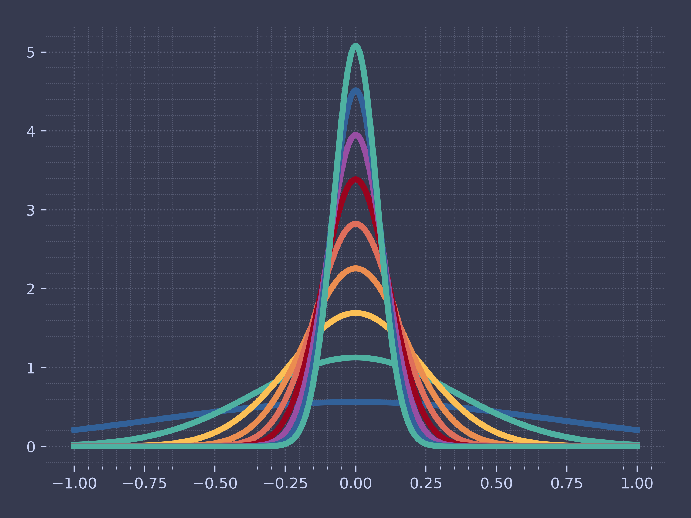

Code for Electrodynamics Vector Calculus
Table of Contents
These are the code snippets used in Vector Calculus part of Electrodynamics.
Introduction
First load the preamble to make sure all plottings and styles are loaded correctly
import ChalcedonPy as cp # custom-pakcage for lecture materials and publications SAVE_PATH = "Vector-Calculus" # sets the default save path style="web" # sets the default rcParams stylce sheet
Plotting of Vector Fields
import matplotlib.pyplot as plt import numpy as np ax = plt.figure().add_subplot(projection='3d') # Make the grid x, y, z = np.meshgrid(np.arange(-0.8, 1, 0.2), np.arange(-0.8, 1, 0.2), np.arange(-0.8, 1, 0.8)) t = np.array(np.arange(0, 1, 0.1)) # Make the direction data for the arrows u = z v = x * y w = - y ** 2 # Define the curve c_x = t ** 2 c_y = t c_z = np.sqrt(t) ax.plot(c_x, c_y, c_z) ax.quiver(x, y, z, u, v, w, length=0.15,cmap=plt.cm.jet, normalize=True) plt.show() # cp.store_fig("test", # filepath = SAVE_PATH, # style = style, # close = True)
The following code plots for the following question:
Find the circulation of the field  around the circle,
around the circle,
 where
where  .
.
import matplotlib.pyplot as plt import numpy as np # Define the grid and the X and Y coordinates X, Y = np.meshgrid(np.arange(-2, 2, .2), np.arange(-2, 2, .2)) U = X - Y V = X # Define the curve in the vector field t = np.arange(0, 2*np.pi, 0.01) c_x = np.cos(t) c_y = np.sin(t) # Create the plot fig, ax = plt.subplots(figsize=(6,6)) M = np.hypot(U, V) Q = ax.quiver(X, Y, U, V, M, units='x', pivot='middle', width=0.05, scale=1 / 0.1) ax.plot(c_x, c_y) # Save the plot with the correct style cp.store_fig("vector-question-2", filepath = SAVE_PATH, style = style, close = True)

import matplotlib.pyplot as plt import numpy as np X, Y = np.meshgrid(np.arange(-2, 2, .2), np.arange(-2, 2, .2)) U, V = - Y, X fig, (ax1, ax2) = plt.subplots(1, 2, figsize=(12, 6)) M = np.hypot(U, V) Q = ax1.quiver(X, Y, U, V, M, units='x', pivot='middle', width=0.05, scale=1 / 0.1) ax2.yaxis.set_visible(False) # don't show yaxis U, V = 0, X M = np.hypot(U, V) Q = ax2.quiver(X, Y, U, V, M, units='x', pivot='middle', width=0.05, scale=1 / 0.1) cp.store_fig("vector-question-3", filepath = SAVE_PATH, style = style, close = True)

The following code prints the figure for the following question:
Evaluate the following integral:
 {
∫0∞ x exp{ (-x) }x}
{equation*
{
∫0∞ x exp{ (-x) }x}
{equation*
import matplotlib.pyplot as plt import numpy as np X = np.arange(0, 10, .02) Y = X * np.exp(-X) plt.plot(X,Y) cp.store_fig("x-exp-x", filepath = SAVE_PATH, style = style, close = True)

import matplotlib.pyplot as plt import numpy as np ax = plt.figure().add_subplot(projection='3d') # Make the grid x, y, z = np.meshgrid(np.arange(-5, 5, 1), np.arange(-5, 5, 1), np.arange(-5, 5, 1)) # Make the direction data for the arrows u = x * y v = 2 * y * z w = 3 * z * x ax.quiver(x, y, z, u, v, w, length=0.5, pivot="middle", linewidth =1, normalize=True) cp.store_fig("3d-quiver-1", filepath = SAVE_PATH, style = style, close = True) plt.show()
import matplotlib.pyplot as plt import numpy as np X, Y = np.meshgrid(np.arange(-2, 2, .2), np.arange(-2, 2, .2)) U = X V = Y fig, (ax1, ax2, ax3) = plt.subplots(1, 3, figsize=(12, 4)) M = np.hypot(U, V) Q = ax1.quiver(X, Y, U, V, M, units='x', pivot='middle', width=0.03, scale=1 / 0.1) U = -X V = -Y M = np.hypot(U, V) Q = ax2.quiver(X, Y, U, V, M, units='x', pivot='middle', width=0.03, scale=1 / 0.1) ax2.yaxis.set_visible(False) U = Y V = X M = np.hypot(U, V) Q = ax3.quiver(X, Y, U, V, M, units='x', pivot='middle', width=0.03, scale=1 / 0.1) ax3.yaxis.set_visible(False) #plt.tight_layout() #plt.show() cp.store_fig("divergence", filepath = SAVE_PATH, style = style, close = True)
import matplotlib.pyplot as plt import numpy as np X, Y = np.meshgrid(np.arange(-2, 2, .2), np.arange(-2, 2, .2)) U = X - Y V = X + Y fig, (ax1, ax2, ax3) = plt.subplots(1, 3, figsize=(12, 4)) M = np.hypot(U, V) Q = ax1.quiver(X, Y, U, V, M, units='x', pivot='middle', width=0.03, scale=1 / 0.1) U = Y V = X M = np.hypot(U, V) Q = ax2.quiver(X, Y, U, V, M, units='x', pivot='middle', width=0.03, scale=1 / 0.1) ax2.yaxis.set_visible(False) U = X V = Y M = np.hypot(U, V) Q = ax3.quiver(X, Y, U, V, M, units='x', pivot='middle', width=0.03, scale=1 / 0.1) ax3.yaxis.set_visible(False) cp.store_fig("curl", filepath = SAVE_PATH, style = style, close = True)
Dirac Delta Function
The 1D delta function is an infinitely high, infinitesimally narrow spike, with an area of 1 [1].

Below is the code to generate the 1D Dirac Delta equation.
#importing the packages import numpy as np import matplotlib.pyplot as plt #Defining the delta function def delta(x, a): return 1 / ( np.abs(a) * np.sqrt(np.pi) ) * np.exp(-(x / a) ** 2) x = np.arange(-1, 1, 0.001) plt.figure() for i in range(1,10): plt.plot(x,delta(x,1/i)) # Save the plot with the correct style cp.store_fig("dirac-delta-1d", filepath = SAVE_PATH, style = style, close = True)
